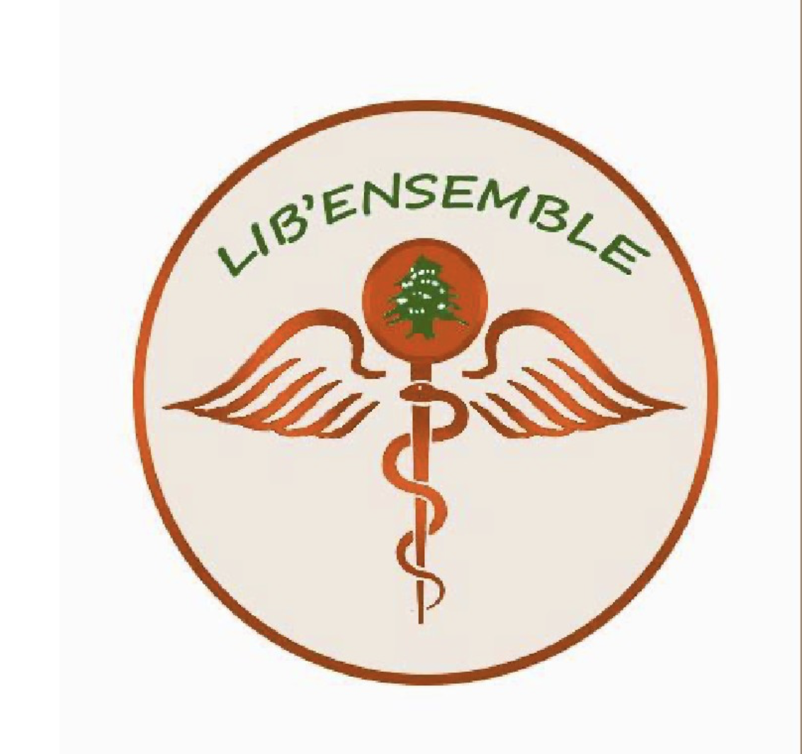

2024–2025
Lib’Ensemble · Responsable relation entrepriseLib’Ensemble · Corporate relations lead
Recherche de financements et de médicaments envoyés à Zahlé, au Liban, avec plus de 3 000 € collectés.
Fundraising and medicine-sourcing effort for Zahlé, Lebanon, with more than €3,000 collected.
